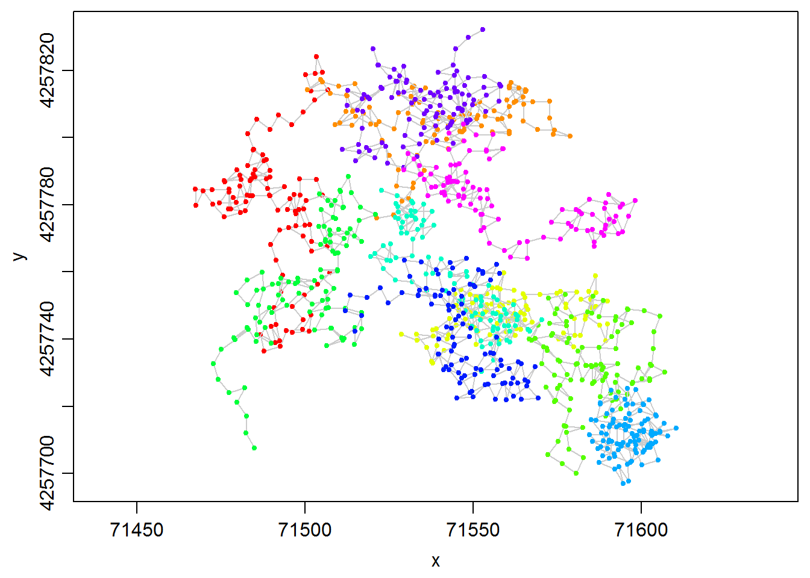

Computing Isopleth Overlap for All Pairs of Hullsets
Andy Lyons
September 10, 2015
In this tip, we demonstrate how to compute the area of overlap for pairs of hullsets (e.g., indviduals) using the lhs.iso.overlap function from the tlocoh.dev package.
Create Some Sample Data
First let’s create some fake movement data. We’ll create random walks for 10 indviduals, with 100 points each.
step_size <- 5
xys_all <- NULL
num_id <- 10
num_pts <- 100
for (i in 1:num_id) {
id <- sprintf("ID%04d", i)
theta <- runif(num_pts, min = 0, max = 2 *pi)
start_loc <- runif(2, min=500, max=600)
xys_this <- data.frame(id=id,
x=start_loc[1] + step_size * cumsum(cos(theta)),
y=start_loc[2] + step_size * cumsum(sin(theta)))
xys_all <- rbind(xys_all, xys_this)
}
head(xys_all)## id x y
## 1 ID0001 507 560
## 2 ID0001 504 556
## 3 ID0001 500 553
## 4 ID0001 496 550
## 5 ID0001 499 546
## 6 ID0001 496 542For a bit of realism, we’ll offset the locations so they’ll appear in Kansas.
xys_all <- transform(xys_all, x = x + 71000, y = y + 4257200)Convert to a locoh-xy Object
Next, we can convert our points to a locoh-xy object. Let’s first load the tlocoh package.
require(tlocoh)## Loading required package: tlocoh
## Loading required package: sp
## T-LoCoH for R (version 1.36.0)
## URL: http://tlocoh.r-forge.r-project.org/
## Bug reports: tlocoh@gmail.com## Make sure you're using version 1.36.00 or later.
packageVersion("tlocoh")## [1] '1.36.0'dummy.lxy <- xyt.lxy(xy=xys_all[ ,2:3],id=xys_all[ ,1], proj4string = CRS("+proj=utm +zone=14 +ellps=WGS84"))
plot(dummy.lxy, overlay=T, title.show=F)
Create Hulls and Isopleths
To create hulls, we first identify nearest neighbors. There’s a process to go through to decide how many neighbors to build hulls with, but we’ll just use k=10 for now.
dummy.lxy <- lxy.nn.add(dummy.lxy, s=0, k=10, status=FALSE)
summary(dummy.lxy)## Summary of LoCoH-xy object: dummy.lxy
## ***Locations
## id num.pts dups
## ID0001 100 0
## ID0002 100 0
## ID0003 100 0
## ID0004 100 0
## ID0005 100 0
## ID0006 100 0
## ID0007 100 0
## ID0008 100 0
## ID0009 100 0
## ID0010 100 0
## ***Time span
## no times recorded
## ***Spatial extent
## ID0001
## x: 71467.4 - 71507.3
## y: 4257736.4 - 4257824.1
## ID0002
## x: 71500.7 - 71578.9
## y: 4257776 - 4257817.2
## ID0003
## x: 71528.7 - 71590
## y: 4257732.9 - 4257759.8
## ID0004
## x: 71566.6 - 71607.1
## y: 4257700.1 - 4257753.3
## ID0005
## x: 71472.7 - 71520.9
## y: 4257707.6 - 4257788.5
## ID0006
## x: 71519.5 - 71570.4
## y: 4257730.2 - 4257784.2
## ID0007
## x: 71584.6 - 71610.5
## y: 4257697 - 4257725.3
## ID0008
## x: 71512.1 - 71569.4
## y: 4257721.8 - 4257764
## ID0009
## x: 71511.1 - 71558.2
## y: 4257791.1 - 4257832.2
## ID0010
## x: 71529.4 - 71598.3
## y: 4257764.1 - 4257804
## proj: +proj=utm +zone=14 +ellps=WGS84
## ***Ancilliary Variables:
## -none-
## ***Nearest-neighbor set(s):
## 1 ID0001|vmax|s0|n100|kmax10|rmax4.5|amax30.7
## 2 ID0002|vmax|s0|n100|kmax10|rmax4.5|amax30
## 3 ID0003|vmax|s0|n100|kmax10|rmax3.6|amax23.3
## 4 ID0004|vmax|s0|n100|kmax10|rmax4.5|amax27.8
## 5 ID0005|vmax|s0|n100|kmax10|rmax4.6|amax31
## 6 ID0006|vmax|s0|n100|kmax10|rmax3.5|amax26
## 7 ID0007|vmax|s0|n100|kmax10|rmax2.9|amax18
## 8 ID0008|vmax|s0|n100|kmax10|rmax4.8|amax34.3
## 9 ID0009|vmax|s0|n100|kmax10|rmax4.3|amax26.3
## 10 ID0010|vmax|s0|n100|kmax10|rmax2.9|amax17.5Next, we make a hullset object. We’ll add the iso.add=TRUE argument to create default density isopleths at the same time and specify the isopleth levels we want to use with iso.levels.
dummy.lhs <- lxy.lhs(dummy.lxy, k=10, s=0, iso.add=TRUE, iso.levels = c(0.5, 0.95), status=FALSE)Let’s inspect isopleths for one of the individuals.
plot(dummy.lhs, iso=TRUE, id="ID0005", allpts=T, col.allpts="gray30", cex.allpts=0.4)
Now we’ll plot an overlay of the isopleths for all of the individuals.
plot(dummy.lhs, iso=TRUE, overlay=TRUE, col.overlay.byhullset=TRUE, gmap="hybrid")## Downloading common background image...Done
Find Isopleth Intersections
Some of these virtual indviduals appear to overlap. Let’s find which ones using the function lhs.iso.overlap. This function will take all pairs of individuals, and find the area of intersection. This function is currently in the toloch.dev package, which is the package for ‘experimental’ functions for T‑LoCoH.
## Make sure you're using version 1.3.01 or later.
if (!require(tlocoh.dev)) install.packages("tlocoh.dev", repos="http://R-Forge.R-project.org")## Loading required package: tlocoh.dev
## Development features for T-LoCoH
## Version 1.3.01
## URL: http://tlocoh.r-forge.r-project.org/
## Please send bug reports and feature requests to tlocoh@gmail.comrequire(tlocoh.dev)The function we want to use is lhs.iso.overlap. This function will look at all pairs of hullsets in dummy.lhs (which in our case correspond to different individuals), and compute the area of intersection.
overlap_stats <- lhs.iso.overlap(dummy.lhs, iso.level=0.95, status=FALSE)
names(overlap_stats)## [1] "spdf" "overlap_area" "overlap_prop"lhs.iso.overlap returns a named list with three elements. The spdf element is a SpatialPolygonsDataFrame contained the polygons of intersection. We can plot it on top of the isopleths:
plot(dummy.lhs, iso=TRUE, overlay=TRUE, col.overlay.byhullset=TRUE)
plot(overlap_stats$spdf, col="#32323280", add=TRUE)The data table (or attribute table) for the areas of intersection of two ids contains the area expressed in map units, as well as a proportion of the two hullsets.
pander( head(overlap_stats$spdf@data) )| hs1name | hs2name | iso_level | area | area_prhs1 | area_prhs2 |
|---|---|---|---|---|---|
| ID0001.pts100.k10.s0.kmin0 | ID0002.pts100.k10.s0.kmin0 | 0.95 | 20.78 | 0.01904 | 0.02144 |
| ID0001.pts100.k10.s0.kmin0 | ID0005.pts100.k10.s0.kmin0 | 0.95 | 126.1 | 0.1155 | 0.1269 |
| ID0002.pts100.k10.s0.kmin0 | ID0009.pts100.k10.s0.kmin0 | 0.95 | 306.9 | 0.3166 | 0.4001 |
| ID0002.pts100.k10.s0.kmin0 | ID0010.pts100.k10.s0.kmin0 | 0.95 | 71.34 | 0.0736 | 0.09879 |
| ID0003.pts100.k10.s0.kmin0 | ID0004.pts100.k10.s0.kmin0 | 0.95 | 112.7 | 0.1775 | 0.09494 |
| ID0003.pts100.k10.s0.kmin0 | ID0006.pts100.k10.s0.kmin0 | 0.95 | 229.3 | 0.3612 | 0.3959 |
The SpatialPolygonsDataFrame could also be exported for use in a GIS program using the rgdal package.
The overlap_area and overlap_prop elements contain matrices of the area of intersection expressed as i) map units and ii) proportions of the areas of isopleths. We can inspect the comparison matrices. First we’ll look at the area of intersection. You’ll note that this matrix is symmetrical around the diagonal.
pander( overlap_stats$overlap_area$iso95 )| ID0001 | ID0002 | ID0003 | ID0004 | ID0005 | ID0006 | ID0007 | ID0008 | ID0009 | ID0010 | |
|---|---|---|---|---|---|---|---|---|---|---|
| ID0001 | 0 | 20.78 | 0 | 0 | 126.1 | 0 | 0 | 0 | 0 | 0 |
| ID0002 | 20.78 | 0 | 0 | 0 | 0 | 0 | 0 | 0 | 306.9 | 71.34 |
| ID0003 | 0 | 0 | 0 | 112.7 | 0 | 229.3 | 0 | 124.6 | 0 | 0 |
| ID0004 | 0 | 0 | 112.7 | 0 | 0 | 0.2265 | 15.85 | 0 | 0 | 0 |
| ID0005 | 126.1 | 0 | 0 | 0 | 0 | 0 | 0 | 0 | 0 | 0 |
| ID0006 | 0 | 0 | 229.3 | 0.2265 | 0 | 0 | 0 | 141.2 | 0 | 0 |
| ID0007 | 0 | 0 | 0 | 15.85 | 0 | 0 | 0 | 0 | 0 | 0 |
| ID0008 | 0 | 0 | 124.6 | 0 | 0 | 141.2 | 0 | 0 | 0 | 0 |
| ID0009 | 0 | 306.9 | 0 | 0 | 0 | 0 | 0 | 0 | 0 | 13.08 |
| ID0010 | 0 | 71.34 | 0 | 0 | 0 | 0 | 0 | 0 | 13.08 | 0 |
Finally, we’ll look at the matrix which expresses the area of overlap as a proportion of each of the two isopleths. This matrix is not symmetrical. For example, the output below tells us that the intersection of the 95% isopleth for ID0005 and ID0001 was 12.69% of the area of the 95% isopleth for ID0005, and 11.55% of the area for ID0001.
pander(overlap_stats$overlap_prop$iso95)| ID0001 | ID0002 | ID0003 | ID0004 | ID0005 | ID0006 | ID0007 | ID0008 | ID0009 | ID0010 | |
|---|---|---|---|---|---|---|---|---|---|---|
| ID0001 | 0 | 0.01904 | 0 | 0 | 0.1155 | 0 | 0 | 0 | 0 | 0 |
| ID0002 | 0.02144 | 0 | 0 | 0 | 0 | 0 | 0 | 0 | 0.3166 | 0.0736 |
| ID0003 | 0 | 0 | 0 | 0.1775 | 0 | 0.3612 | 0 | 0.1963 | 0 | 0 |
| ID0004 | 0 | 0 | 0.09494 | 0 | 0 | 0.0001909 | 0.01335 | 0 | 0 | 0 |
| ID0005 | 0.1269 | 0 | 0 | 0 | 0 | 0 | 0 | 0 | 0 | 0 |
| ID0006 | 0 | 0 | 0.3959 | 0.0003912 | 0 | 0 | 0 | 0.2439 | 0 | 0 |
| ID0007 | 0 | 0 | 0 | 0.04577 | 0 | 0 | 0 | 0 | 0 | 0 |
| ID0008 | 0 | 0 | 0.1388 | 0 | 0 | 0.1573 | 0 | 0 | 0 | 0 |
| ID0009 | 0 | 0.4001 | 0 | 0 | 0 | 0 | 0 | 0 | 0 | 0.01705 |
| ID0010 | 0 | 0.09879 | 0 | 0 | 0 | 0 | 0 | 0 | 0.01811 | 0 |
Summary
The lhs.iso.overlap function from the tlocoh.dev package makes it easy to compute the area of intersection of many pairs of hullsets. While not as nuanced as other measures of association, homerange intersection can give you idea of which pairs of individuals share space.
T-LoCoH Tips. If you find this tip useful, or have feedback or another question on how to use T-LoCoH, please contact the package author. (c) 2015